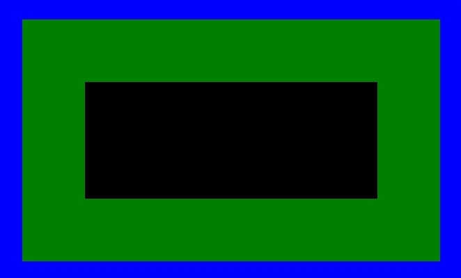
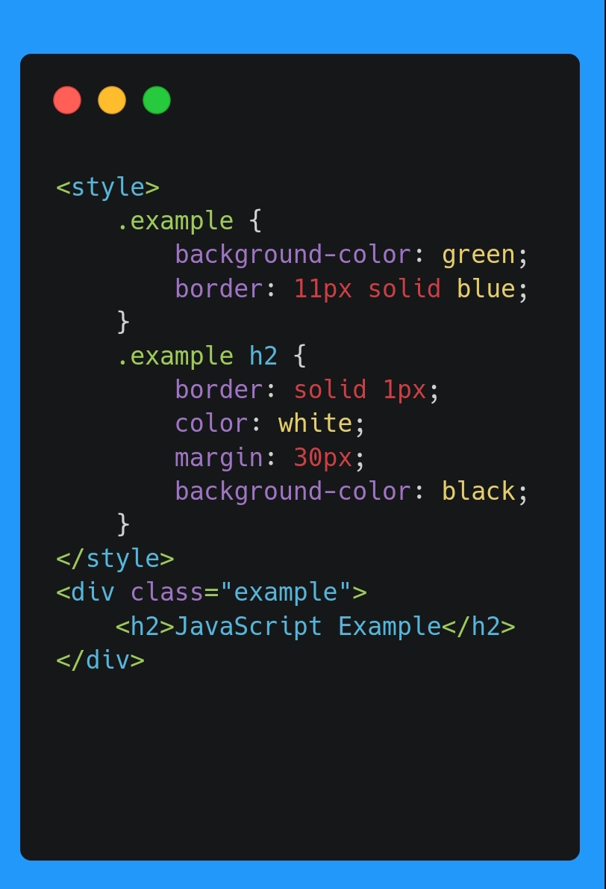

MARGIN
هذه الخاصية مختصرة لتجنب تحديد الهامش لكل جانب على حدة مثل
margin-top و margin-right و margin-bottom و margin-left
. و إذا تم تحديد قيمة واحدة: فسيتم تطبيقها على الجوانب الأربعة
: مثال

margin الاخضر ده هو ال
: الكود
